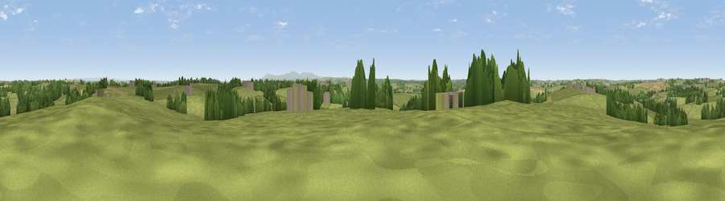

Viewpoint near Shebbear
#25031 in England · top 49% of its area beats it · near ShebbearThe view, rendered

A 360° render of this exact spot computed from the terrain model, tree cover and land cover — summer colours, afternoon light, calibrated against photographs of famous viewpoints. Real trees, hedges and buildings will differ in detail.
The panorama
Grey silhouette: terrain skyline in each direction (720 bearings, Earth curvature and refraction included). Dashed green: skyline with trees (+15 m) and buildings (+8 m) as obstacles. Blue strip: how far the ground is visible on each bearing.
Where the view opens
Wedge length = distance to the farthest visible ground on that bearing (vegetation-aware). Rings at 10, 25 and 50 km.
What fills the view
78% grassland · 13% woodland · 7% cropland · 3% built-up
Angular shares of the visible panorama (visual magnitude), not map area. Landscape diversity 0.32 (0–1 Shannon).
Key numbers
More beautiful places nearby
The staircase of upgrades: each row has a higher view potential than everything closer. Driving times are estimates from straight-line distance, calibrated against real road routing — check an actual route before setting out.
| Place | Direction | Drive | Score |
|---|---|---|---|
| Viewpoint near Newton St Petrock | WNW · 4 km | ~9 min | 49.7 |
| Viewpoint near Petrockstowe | ESE · 5 km | ~11 min | 59.2 |
| Viewpoint near Petrockstowe | E · 6 km | ~12 min | 65.5 |
| Viewpoint near Buckland Brewer | NNW · 11 km | ~21 min | 66.6 |
| Viewpoint near Littleham | N · 14 km | ~25 min | 68.1 |
| Viewpoint near Parkham | NNW · 14 km | ~25 min | 69.2 |
| Viewpoint near High Bullen | NE · 14 km | ~25 min | 71.2 |
| Viewpoint near Parkham | NNW · 15 km | ~26 min | 81.7 |
50.86995, -4.21948 · source: screening · position refined by local search. Computed location — check access rights before visiting.